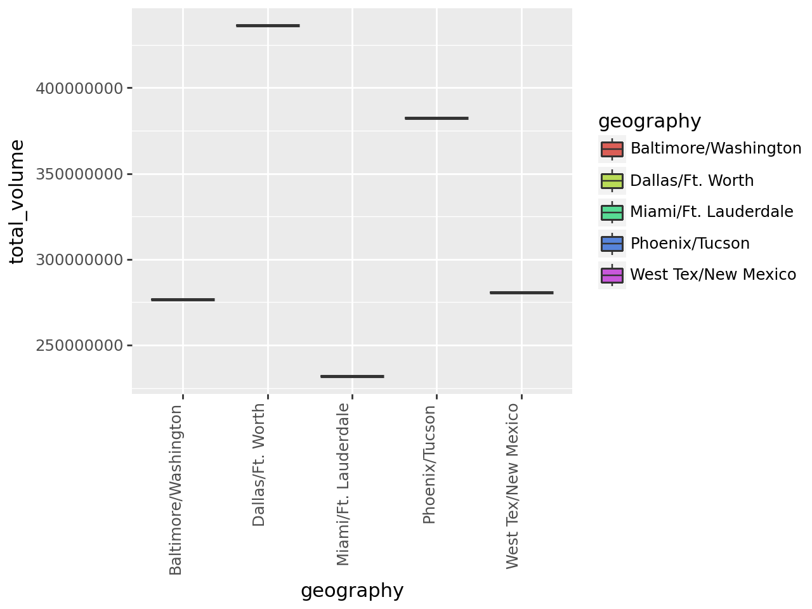
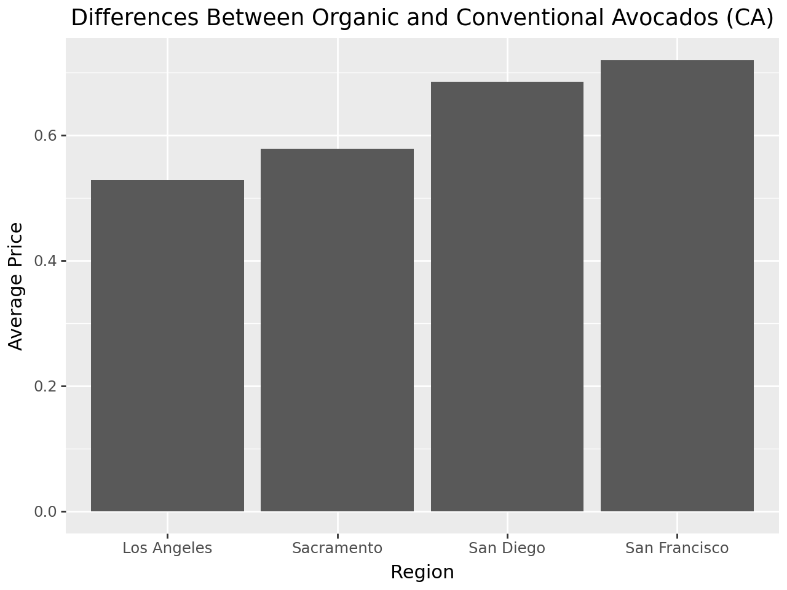
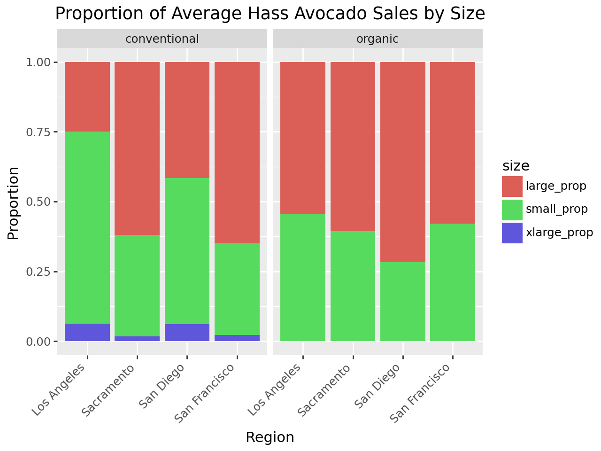
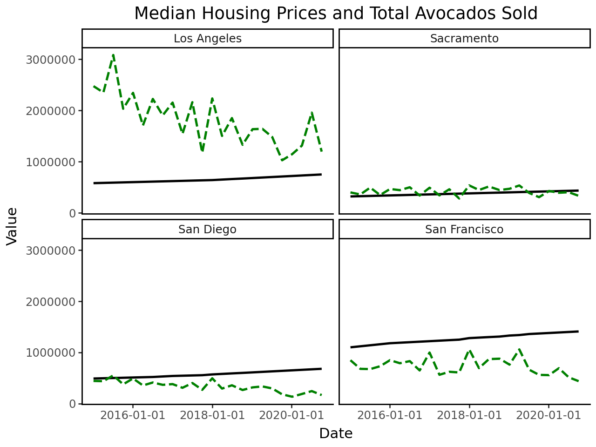

---
title: "Lab 2 - Avocado Sales"
author: "Roee Morag"
date: "2024-10-07"
output:
html_document:
theme: "cosmo"
--- Cell In[30], line 1 --- ^ SyntaxError: invalid syntax
---
title: "Lab 2 - Avocado Sales"
author: "Roee Morag"
date: "2024-10-07"
output:
html_document:
theme: "cosmo"
--- Cell In[30], line 1 --- ^ SyntaxError: invalid syntax
import pandas as pd
import numpy as npavocado_df = pd.read_csv("C:\\Users\\morag\\OneDrive\\Documents\\MSBA\\GSB 544\\Labs\\Labs---GSB-544\\Data\\avocado-updated-2020.csv")avocado_df.head(n=4)| date | average_price | total_volume | 4046 | 4225 | 4770 | total_bags | small_bags | large_bags | xlarge_bags | type | year | geography | |
|---|---|---|---|---|---|---|---|---|---|---|---|---|---|
| 0 | 2015-01-04 | 1.22 | 40873.28 | 2819.50 | 28287.42 | 49.90 | 9716.46 | 9186.93 | 529.53 | 0.0 | conventional | 2015 | Albany |
| 1 | 2015-01-04 | 1.79 | 1373.95 | 57.42 | 153.88 | 0.00 | 1162.65 | 1162.65 | 0.00 | 0.0 | organic | 2015 | Albany |
| 2 | 2015-01-04 | 1.00 | 435021.49 | 364302.39 | 23821.16 | 82.15 | 46815.79 | 16707.15 | 30108.64 | 0.0 | conventional | 2015 | Atlanta |
| 3 | 2015-01-04 | 1.76 | 3846.69 | 1500.15 | 938.35 | 0.00 | 1408.19 | 1071.35 | 336.84 | 0.0 | organic | 2015 | Atlanta |
This data set is about avocado prices in different regions/cities of the United States. Each row/observation represents a day of avocado sales in a specific city, i.e Albany, NY or Atlanta, GA. Each region/city has two observations for each date though, one showing their sales of conventional avocados and the other showing their sales of organic avocados. Each of thesscities is also a subset of a region which is a subset of the total United States column. Columns in the data set include average price of the avocados sold, the total volume of avocados sold, total bags, small bags, large bags, and extra large bags sold. The 4046, 4225, and 4770 columns are the price look up codes for smaller, medium, and large avocados and the columns refer to the amount sold on the given day.
As far as cleaning this data set goes, I will clean it as I go through the problems - not quite sure how to organize this until I have intiative with the problems. I will rename some columns, such as 4046, to more intuitive naming schemes. I’m also going to create dummy variables for major and metro regions.
avocado_df["geography"].unique()array(['Albany', 'Atlanta', 'Baltimore/Washington', 'Boise', 'Boston', 'Buffalo/Rochester',
'California', 'Charlotte', 'Chicago', 'Cincinnati/Dayton', 'Columbus', 'Dallas/Ft. Worth',
'Denver', 'Detroit', 'Grand Rapids', 'Great Lakes', 'Harrisburg/Scranton',
'Hartford/Springfield', 'Houston', 'Indianapolis', 'Jacksonville', 'Las Vegas', 'Los Angeles',
'Louisville', 'Miami/Ft. Lauderdale', 'Midsouth', 'Nashville', 'New Orleans/Mobile', 'New York',
'Northeast', 'Northern New England', 'Orlando', 'Philadelphia', 'Phoenix/Tucson', 'Pittsburgh',
'Plains', 'Portland', 'Raleigh/Greensboro', 'Richmond/Norfolk', 'Roanoke', 'Sacramento',
'San Diego', 'San Francisco', 'Seattle', 'South Carolina', 'South Central', 'Southeast',
'Spokane', 'St. Louis', 'Syracuse', 'Tampa', 'Total U.S.', 'West', 'West Tex/New Mexico'],
dtype=object)major_regions = ["Northeast", "West", "South Central", "Southeast", "Great Lakes", "Plains", ]
metro_regions = ['Baltimore/Washington', 'Buffalo/Rochester', 'Cincinnati/Dayton', 'Dallas/Ft. Worth',
'Harrisburg/Scranton', 'Hartford/Springfield', 'Miami/Ft. Lauderdale', 'New Orleans/Mobile',
'Phoenix/Tucson', 'Raleigh/Greensboro', 'Richmond/Norfolk', 'West Tex/New Mexico']
avocado_df["major_region"] = np.where(avocado_df["geography"].isin(major_regions), 1, 0)
avocado_df["metro_region"] = np.where(avocado_df["geography"].isin(metro_regions), 1, 0)avocado_df.rename(columns={"4046": "small_avocados", "4225": "large_avocados", "4770": "xlarge_avocados"}, inplace=True)For this question, I will filter a data set to include only the year 2017, only organic avocado sales, and major regions. Then, I will group by region, sum along the column of small_avocados and sort by that column descending. I do not know which major geographical regions are covered in this dataset iwhtout combing through the 700ish entries but this method should give me a good idea.
organic_2017 = avocado_df[(avocado_df["type"] == "organic") & (avocado_df["year"] == 2017)
& (avocado_df["major_region"] == 1)]small_haas_2017_sum = organic_2017.groupby("geography")["small_avocados"].sum().reset_index().sort_values(by="small_avocados", ascending=False)
small_haas_2017_sum| geography | small_avocados | |
|---|---|---|
| 5 | West | 1870206.29 |
| 3 | South Central | 1717104.19 |
| 1 | Northeast | 925832.36 |
| 4 | Southeast | 285124.34 |
| 0 | Great Lakes | 202487.68 |
| 2 | Plains | 168583.40 |
I am going to assume that there are five major geographical regions (as I’m seeing in the data). They are West, South Central, Northeast, Southeast, and Midsouth. The West region sold the most total organic, small Haas avocados in 2017 with 1870206.29.
This is going to be a similar process to the last problem. First, we will create new variables for day and month (unnecessary for year as we already have a variable for that). Then we will filter out the data set to only include the geography of “Total US”. Finally, we will group by the month and average out the total volume of avocados sold.
avocado_df["date"] = pd.to_datetime(avocado_df["date"])
avocado_df["month"] = avocado_df["date"].dt.month
avocado_df["day"] = avocado_df["date"].dt.daytotal_us = avocado_df[avocado_df["geography"] == "Total U.S."]total_us.groupby("month")["total_volume"].mean().reset_index().sort_values(by="total_volume", ascending=False)| month | total_volume | |
|---|---|---|
| 4 | 5 | 2.293203e+07 |
| 1 | 2 | 2.236790e+07 |
| 5 | 6 | 2.144947e+07 |
| 3 | 4 | 2.077160e+07 |
| 2 | 3 | 2.035640e+07 |
| 0 | 1 | 2.011432e+07 |
| 6 | 7 | 2.009696e+07 |
| 7 | 8 | 1.938566e+07 |
| 8 | 9 | 1.847439e+07 |
| 9 | 10 | 1.719583e+07 |
| 10 | 11 | 1.673651e+07 |
| 11 | 12 | 1.645596e+07 |
The month of May sees the highest average volume of avocado sales.
First, I’m going to filter a data frame to one with only metro geographical regions. Then, we can group by region and sum the total volume.
metro_regions = avocado_df[avocado_df["metro_region"] == 1]
most_total_metro =metro_regions.groupby("geography")["total_volume"].sum().reset_index().sort_values(by="total_volume", ascending=False).head(n=5)
most_total_metro| geography | total_volume | |
|---|---|---|
| 3 | Dallas/Ft. Worth | 4.362042e+08 |
| 8 | Phoenix/Tucson | 3.825234e+08 |
| 11 | West Tex/New Mexico | 2.806116e+08 |
| 0 | Baltimore/Washington | 2.767646e+08 |
| 6 | Miami/Ft. Lauderdale | 2.317448e+08 |
# The boxplot graph is not rendering correctly.
from plotnine import ggplot, aes, geom_boxplot, theme, element_text
(ggplot(most_total_metro, aes(x="geography", y="total_volume", fill="geography"))
+ geom_boxplot()
+ theme(axis_text_x=element_text(angle=90, hjust=1))
)
california_regions = ["Los Angeles", "San Diego", "Sacramento", "San Francisco"]
california_df = avocado_df[avocado_df['geography'].isin(california_regions)]avg_price = california_df.groupby(["geography", "type"])["average_price"].mean().reset_index()
avg_price = avg_price.pivot(index="geography", columns="type", values="average_price").reset_index()
avg_price["price_diff"] = avg_price["organic"] - avg_price["conventional"]
avg_price| type | geography | conventional | organic | price_diff |
|---|---|---|---|---|
| 0 | Los Angeles | 1.047124 | 1.574902 | 0.527778 |
| 1 | Sacramento | 1.295359 | 1.873856 | 0.578497 |
| 2 | San Diego | 1.113856 | 1.798366 | 0.684510 |
| 3 | San Francisco | 1.400490 | 2.119444 | 0.718954 |
from plotnine import ggplot, aes, geom_bar, position_dodge, labs
(ggplot(avg_price, aes(x='geography', y='price_diff'))
+ geom_bar(stat='identity', position=position_dodge())
+ labs(title="Differences Between Organic and Conventional Avocados (CA)",
x="Region",
y="Average Price")
)
california_df["total_avocados"] = california_df["small_avocados"] + california_df["large_avocados"] + california_df["xlarge_avocados"]
california_df["small_prop"] = california_df["small_avocados"] / california_df["total_avocados"]
california_df["large_prop"] = california_df["large_avocados"] / california_df["total_avocados"]
california_df["xlarge_prop"] = california_df["xlarge_avocados"] / california_df["total_avocados"]<positron-console-cell-47>:1: SettingWithCopyWarning:
A value is trying to be set on a copy of a slice from a DataFrame.
Try using .loc[row_indexer,col_indexer] = value instead
See the caveats in the documentation: https://pandas.pydata.org/pandas-docs/stable/user_guide/indexing.html#returning-a-view-versus-a-copy
<positron-console-cell-47>:3: SettingWithCopyWarning:
A value is trying to be set on a copy of a slice from a DataFrame.
Try using .loc[row_indexer,col_indexer] = value instead
See the caveats in the documentation: https://pandas.pydata.org/pandas-docs/stable/user_guide/indexing.html#returning-a-view-versus-a-copy
<positron-console-cell-47>:4: SettingWithCopyWarning:
A value is trying to be set on a copy of a slice from a DataFrame.
Try using .loc[row_indexer,col_indexer] = value instead
See the caveats in the documentation: https://pandas.pydata.org/pandas-docs/stable/user_guide/indexing.html#returning-a-view-versus-a-copy
<positron-console-cell-47>:5: SettingWithCopyWarning:
A value is trying to be set on a copy of a slice from a DataFrame.
Try using .loc[row_indexer,col_indexer] = value instead
See the caveats in the documentation: https://pandas.pydata.org/pandas-docs/stable/user_guide/indexing.html#returning-a-view-versus-a-copyavo_props = california_df.groupby(["type", "geography"]).agg({
"small_prop": "mean",
"large_prop": "mean",
"xlarge_prop": "mean"
}).reset_index().melt(id_vars=["type", "geography"],
var_name="size", value_name="proportion")from plotnine import ggplot, aes, geom_bar, position_stack, labs, theme, element_text, facet_wrap, scale_fill_discrete
# ChatGPT assisted on the bar plot
(ggplot(avo_props, aes(x="geography", y="proportion", fill="size"))
+ geom_bar(stat="identity", position=position_stack())
+ labs(title="Proportion of Average Hass Avocado Sales by Size",
x="Region",
y="Proportion")
+ theme(axis_text_x=element_text(rotation=45, hjust=1))
+ facet_wrap("~ type")
)
I am going to have ChatGPT make a sample data frame of potential housing prices in the California regions. I will have it be based on real time housing data - ChatGPT references Zillow.
from datetime import datetime
housing_data = {
"date": [
datetime(2015, 1, 4), datetime(2015, 4, 5), datetime(2015, 7, 5), datetime(2015, 10, 4),
datetime(2016, 1, 3), datetime(2016, 4, 3), datetime(2016, 7, 3), datetime(2016, 10, 2),
datetime(2017, 1, 1), datetime(2017, 4, 2), datetime(2017, 7, 2), datetime(2017, 10, 1),
datetime(2018, 1, 1), datetime(2018, 4, 1), datetime(2018, 7, 1), datetime(2018, 10, 7),
datetime(2019, 1, 7), datetime(2019, 4, 7), datetime(2019, 7, 7), datetime(2019, 10, 6),
datetime(2020, 1, 6), datetime(2020, 4, 5), datetime(2020, 7, 5), datetime(2020, 10, 4)
],
"San Diego": [
490000, 495000, 500000, 505000, 510000, 515000, 520000, 530000,
540000, 545000, 550000, 555000, 570000, 580000, 590000, 600000,
610000, 620000, 630000, 640000, 650000, 660000, 670000, 680000
],
"San Francisco": [
1100000, 1120000, 1140000, 1160000, 1180000, 1190000, 1200000, 1210000,
1220000, 1230000, 1240000, 1250000, 1280000, 1290000, 1300000, 1310000,
1330000, 1340000, 1360000, 1370000, 1380000, 1390000, 1400000, 1410000
],
"Sacramento": [
320000, 325000, 330000, 335000, 340000, 345000, 350000, 355000,
360000, 365000, 370000, 375000, 380000, 385000, 390000, 395000,
400000, 405000, 410000, 415000, 420000, 425000, 430000, 435000
],
"Los Angeles": [
580000, 585000, 590000, 595000, 600000, 605000, 610000, 615000,
620000, 625000, 630000, 635000, 640000, 650000, 660000, 670000,
680000, 690000, 700000, 710000, 720000, 730000, 740000, 750000
]
}
housing_df = pd.DataFrame(housing_data)cali_df = california_df[["date", "geography", "total_avocados", "year"]]
cali_df = cali_df.groupby(["date", "geography"])["total_avocados"].sum().reset_index()housing_df = housing_df.melt(id_vars=["date"],
var_name="geography",
value_name="median_housing_price")housing_avocado_df = pd.merge(housing_df, cali_df, on=['date', 'geography'], how="inner")from plotnine import ggplot, aes, geom_line, facet_wrap, labs, theme_classic
(ggplot(housing_avocado_df, aes(x="date"))
+ geom_line(aes(y="median_housing_price"), color="black", size=1, linetype="solid")
+ geom_line(aes(y="total_avocados"), color="green", size=1, linetype="dashed")
+ facet_wrap("~ geography")
+ labs(title="Median Housing Prices and Total Avocados Sold",
x="Date",
y="Value",
color="Geography")
+ theme_classic()
)
In Sacramento, the total avocados sold in each day nearly exactly matches the plot for Sacramento median housing. In that region, it appears that the demand for housing and avocados have a very similar relationship. In all four cities, total avocados were being sold at higher rates from 2015 to 2020. There definitely was an increase in demand for avocados. The housing prices in all these cities fluctuated but that is probably because this is made-up data and should not be taken as gospel. Rather, we can focus on the avocado growth in sales and conjecture that the vegetable, or fruit, has risen in popularity. Maybe it’s the millenials. Maybe it’s the boomers. I can’t determine for sure.